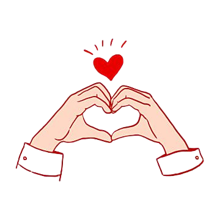
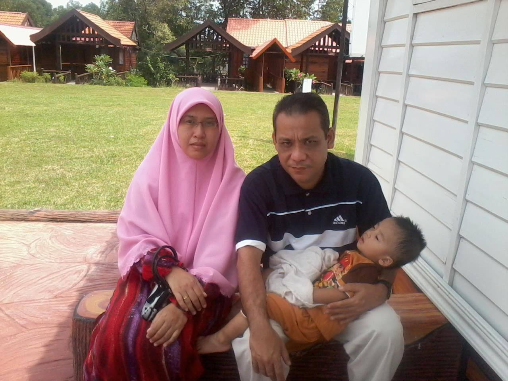
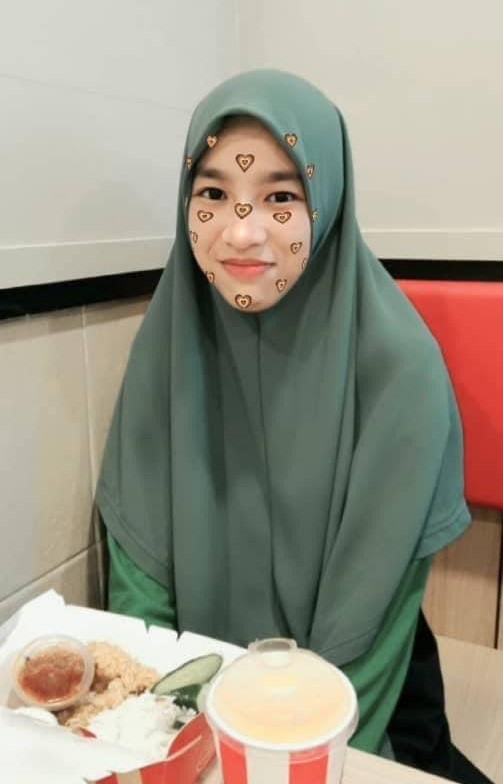
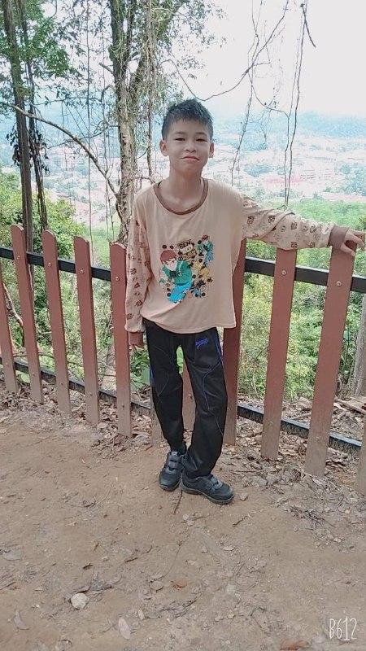
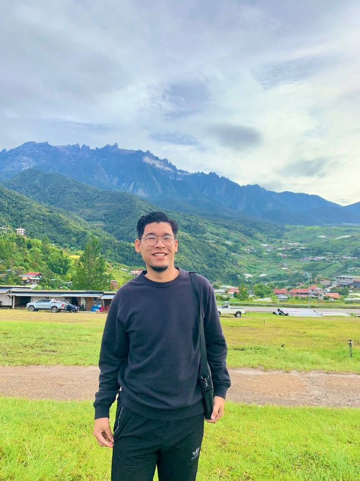
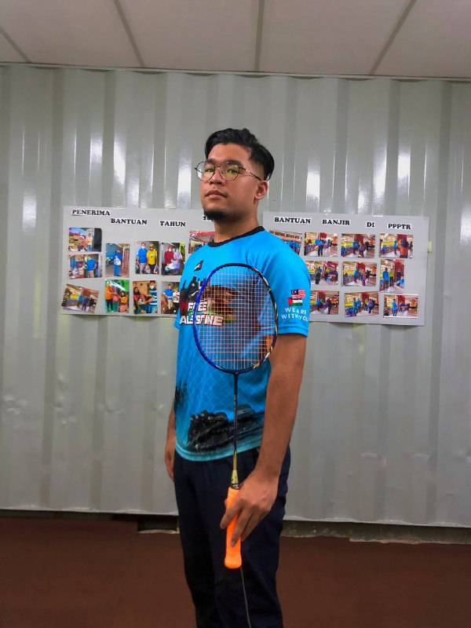
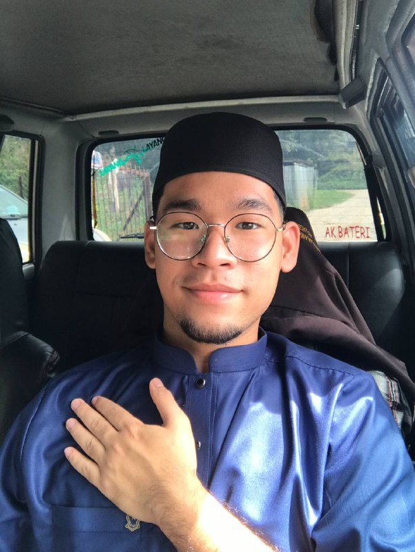
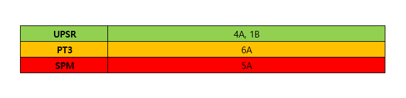

"TAK KENAL MAKA TAK CINTA"
This is one of the famous phrases in Malaysia which translates to "You can't love what you don't know" in English.
The phrase is often used to convey the idea that in order to truly appreciate or care about something, one must first have knowledge of it.
It is often used to express the importance of understanding and knowledge in order to form a meaningful relationship or connection with something
or someone. The phrase can be applied to many different contexts, including personal relationships, cultural appreciation, and even business.
It is also used as a reminder that one should not dismiss or ignore something simply because it is unfamiliar or different. Instead, it encourages
people to take the time to learn and understand it in order to form a deeper appreciation and connection.
Thus, I welcome you with open arms to explore my world. So, sit back and just unwind while we get to know each other better!

FAMILY

This is My Beloved Family

First and foremost, These are my Parents. My mother's name is Laila Hanim bt Nawawi. Already 49 years old. He works as a clerk at a children's school named PASTI.
Before this, he also served as a clerk at a religious school and he quit that service at the beginning of 2020. For me, my mother is a hero in the family because
she is very caring, loving, and responsible for us as a family. My mother has no comparison with anyone because she has a very strong soul and sacrifice.
Then my father named Sobri bin Mohamad. Aged 54 years. He is a very loving father to his children. He did not work until today as a result of the illness he had to
face which made it difficult for him to work. Even though he was the one who faced the problem, his love never faded for us.
Even so, my mother and father's relationship stopped in the middle of 2020. For 20 years they went through ups and downs in being a family. Raise us with love. May
they be blessed by Allah Taala.

This is my eldest brother named Muhammad Syafiq bin Sobri. Aged 23 years. A sweet person blessed with a tall body and tan skin. He is a brother with a different
character from his other siblings because he is the only one with tan skin. In addition, he really likes to play football with his friends and likes to be friends with
many people. Now, he has worked on the side to earn a good living for his family.

This is the third of my four siblings. Her name is Nur Izzati Balqis bt Sobri, 18 years old. She just finished studying at Maahad Assultan Haji Ahmad Shah Bandar Jengka.
She is the only sister in my siblings. She is a hard worker and often helps my mother in the kitchen when she cooks. She is also a person who is good at studying because
he often gets the best achievements.

Lastly, my youngest brother named Muhammad Mursyid bin Sobri. Now is 12 years old. Attended National School in Central City. He is the last sibling in the family.
For me, he is a very close person to my father. Even though they are far apart, he always talks about his father when they were together before. He is active in sports
and his hobbies are cycling, playing football, badminton and many more. I hope that he will become a devoted family man one day.
ABOUT ME

I'm Muhammad Asyraf bin Sobri, born in Rantau Perintis, Bandar Tun Abdul Razak Jengka Pahang. I am the 2nd child of 4 siblings.
Currently, I am studying at UITM, Malaysia. I am grateful to be born into a loving and supportive family who have always been there for me since I was
little.
I have always been passionate about education and learning new things. That's why I chose to pursue a diploma in Information Management at UITM.
I believe that the field of information management is vital for today's digital age and it will play a crucial role in shaping the future of how businesses
and organizations operate. I am excited to learn more about data management, systems analysis, and information technology. I also look forward to learning
about the latest industry trends and technologies to stay current in the field.
In the future, I hope to secure a job in a reputed company where I can apply my knowledge and skills in a practical setting. I am also determined to pursue
further studies in my field, and I hope to obtain a degree in the near future. I believe that with my dedication and passion for learning, I will be able to
achieve my career goals.
PASSION AND INTEREST

Badminton is a sport that requires a combination of speed, agility, and precision. It is a sport that can be enjoyed by people of all ages
and skill levels, making it a popular pastime around the world. The passion for badminton comes from the thrill of the game, the feeling of
hitting the shuttlecock across the net and the challenge of outwitting your opponent. It is a sport that can be played both indoors and outdoors,
and it is a great way to stay active and improve your physical fitness. Many people also find that playing badminton helps them to relieve stress
and improve their mental well-being.
Listening to music is a passion for many people, and it can have a powerful impact on our emotions. Whether it's a song that makes us feel happy,
a ballad that brings us to tears, or a piece of music that helps us to relax, music can evoke a wide range of feelings and memories. People listen
to music for different reasons, it can be for entertainment, to express themselves, to cope with difficult emotions, or even to enhance their athletic
performance. People often find solace in music and it can be a powerful way to connect with others and share in a common experience. It’s also a great
way to unwind and relax after a long day.

I want to explore my religion of Islam in depths and gain a deeper understanding of its teachings and principles. I believe that by studying the Quran
and Hadith, as well as learning from scholars and experienced practitioners, I will be able to strengthen my faith and become a better Muslim. I also want
to apply the knowledge and wisdom gained from my studies to my daily life and to be a role model for others. I plan to become more active in my community by
volunteering and participating in religious activities and events. I believe that by serving others and spreading the message of Islam, I can make a positive
impact on the lives of those around me.
ACHIEVEMENTS

1. District representative in Pahang level Badminton Tournament (2011)
2. Representing the district in Khutbah Event (2019)
3. Became a Member Of the Information Management Association in Uitm Machang